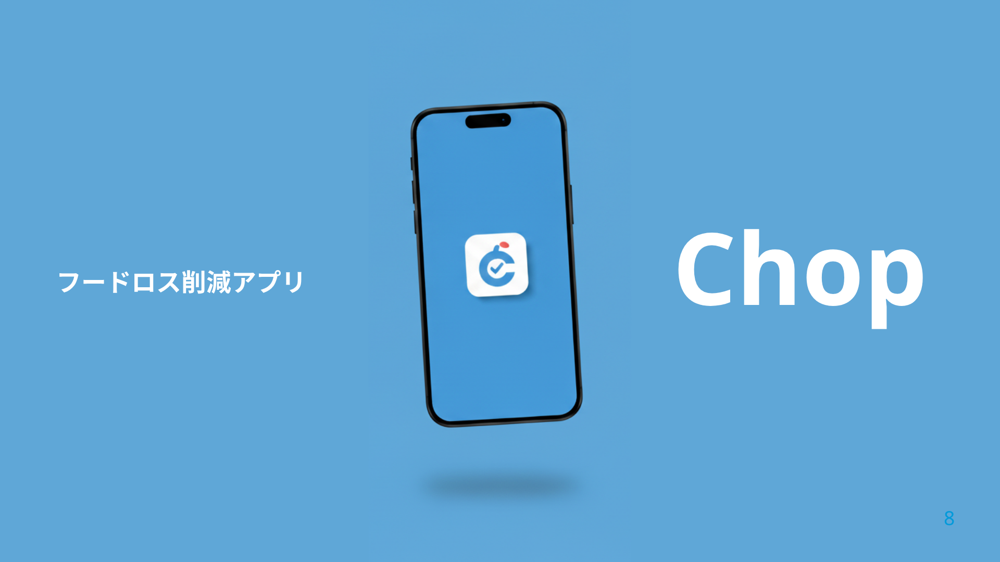
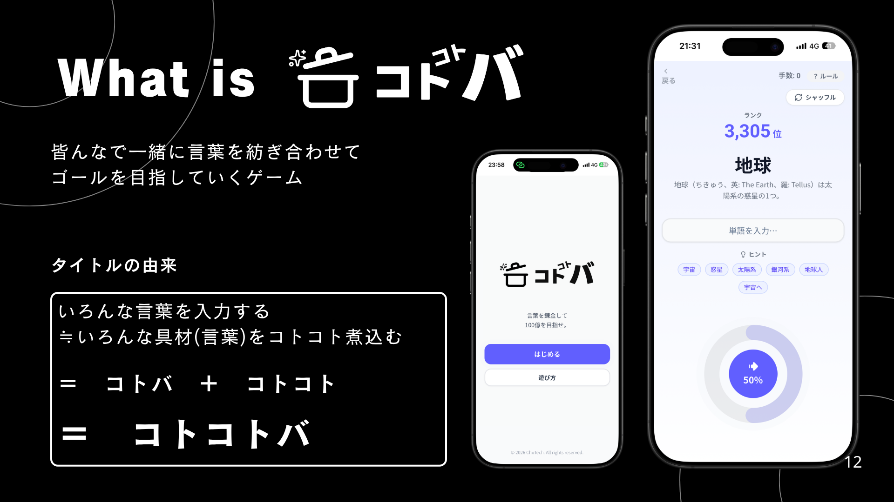

Chop
2025 / APP購入前のAI診断で、食品ロスを未然に防ぐ。
React Native / Expo / TypeScript / SQLite
Tornado 2025 最優秀賞
Data · Language · Experience
好きという気持ちを、ものづくりの真ん中に。
データと言葉から、人の心が動く体験を。

購入前のAI診断で、食品ロスを未然に防ぐ。
React Native / Expo / TypeScript / SQLite
Tornado 2025 最優秀賞

言葉の錬成を、ゲームとして楽しむ。
Python / FastAPI / Word2Vec / Next.js
ガバイソン2026春 最優秀賞
データサイエンスとAIを学びながら、Webやアプリを制作しています。興味があるのは、技術が日常の課題や遊びに結びつく瞬間です。
何を作ったかに加えて、なぜその方法を選んだのか、どう確かめたのか。制作と改善の過程まで伝わるポートフォリオを目指しています。
AI買い物サポートアプリを制作。
Tornado 2025 最優秀賞。
Word2Vecを用いた言葉のゲームを制作。
ガバイソン2026春 最優秀賞。
これからの方針：設計判断や改善の記録を整理し、作品の背景として伝える。